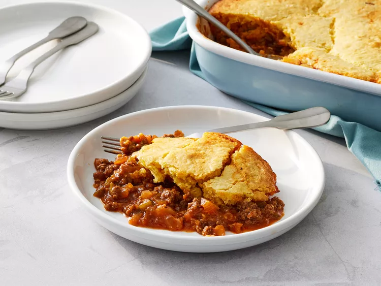

Sloppy Joe Cornbread Casserole Recipe

Description
Sloppy Joe Cornbread Casserole is a delightful twist on a classic comfort food, combining the rich, tangy
flavors of homemade sloppy Joe with a golden, fluffy cornbread topping. This hearty casserole features savory
ground beef, tender onions, and bell peppers simmered in a flavorful sauce made with tomato paste, ketchup,
Worcestershire sauce, and spices. Instead of serving on a bun, the filling is topped with a cornbread layer that
bakes to perfection, creating a delicious, crowd-pleasing dish perfect for any gathering. Easy to prepare and
even easier to love, this casserole is sure to become a family favorite.
Ingredients
- cooking spray
- 2 pounds ground chuck
- 2 cups finely chopped yellow onion
- 1 cup finely chopped green bell pepper
- 3 tablespoons tomato paste
- 2 cups beef broth
- 1 1/2 cups ketchup
- 3 tablespoons yellow mustard
- 2 tablespoons Worcestershire sauce
- 2 tablespoons packed light brown sugar
- 1 teaspoon garlic powder
- 1/2 teaspoon freshly ground black pepper
- 2 (8.5 ounce) packages corn muffin mix (such as Jiffy®)
- 2/3 cup whole milk
- 1 1/2 teaspoons baking powder
- 2 large eggs
Directions
- Gather all ingredients. Preheat oven to 350 degrees F (175 degrees C). Lightly spray a 9x13-inch baking dish
with cooking spray.
- Heat a large skillet over medium-high heat; add ground beef, and cook, stirring occasionally and breaking up
meat into smaller pieces with a wooden spoon, until almost fully browned, about 4 minutes. Add onion and
bell pepper, and cook over medium-high, stirring occasionally, until softened and tender, 6 to 8 minutes.
- Stir in tomato paste; cook, stirring constantly, until tomato paste has slightly darkened in color, about 2
minutes. Stir in beef broth, using a spatula to scrape any browned bits from bottom of pan. Stir in ketchup,
mustard, Worcestershire sauce, sugar, garlic powder, and black pepper until fully combined. Bring to a boil
over medium-high, and cook, stirring occasionally, until sauce thickens and bubbles appear all over the
surface, about 7 minutes. Remove from heat, and transfer to the prepared baking dish.
- Whisk together corn muffin mix, milk, baking powder, and eggs in a medium bowl until fully combined; spoon
in an even layer over sloppy Joe filling.
- Bake in the preheated oven until cornbread is golden brown and a wooden pick inserted in the center comes
out clean, 20 to 25 minutes. Serve immediately.